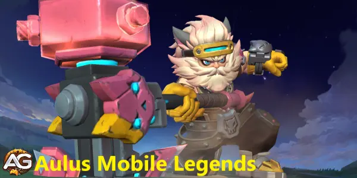
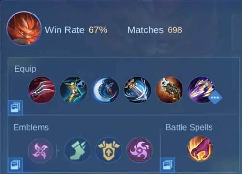

Aulus is a versatile Fighter in Mobile Legends: Bang Bang who excels at dealing significant damage while also providing support to his allies. His skill set allows him to be both a formidable presence in battles and a valuable team player.
Aulus Main Characteristics and Tier List in Mobile Legends
Table: Aulus Main Characteristics
Main Characteristics
Details
Function:
Fighter
Attributes:
Damage, Crowd Control
Position on Lane:
Jungle
Difficulty to Play:
Medium
Win Rate:
52.52%
Popularity
0.2%
Ban Rate:
0.49%
Table: Aulus Lane Tier List
2025 Lane Tier List
Rank
Jungle Tier List:
A+
EXP Tier List:
B

Illustration of Aulus, a character from the game Mobile Legends, developed by Moonton.
Tactics and Strategies for Using Aulus
Early Game
During the early game, Aulus is a versatile and potent hero capable of holding his own against most opponents. Focus on the following:
Lane Control: Utilize your skills to dominate your lane, ensuring you get as many last hits as possible to gain gold and experience.
Harassment: Use "Aulus, Charge!" to close the gap and harass enemy heroes, forcing them to play defensively.
Survivability: Take advantage of the damage reduction from "Aulus, Charge!" to withstand enemy attacks and stay in the lane longer.
Mid Game
In the mid game, Aulus’s role shifts slightly as you start to focus more on objectives and team fights:
Pushing Turrets: Your enhanced Basic Attacks from "The Power of Axe" make you a formidable pusher. Focus on taking down enemy turrets to apply pressure on the enemy team.
Positioning: Good positioning is key. Stay at the frontlines during team fights to absorb damage and disrupt the enemy team.
Turning Team Fights: With proper timing and positioning, you can turn the tide of team fights. Use "Undying Fury" to deal significant damage and disrupt enemy formations.
Late Game
In the late game, Aulus’s focus should be on targeting high-priority enemies and maximizing his damage output:
Targeting Carries: Aim to attack the enemy carry (usually the marksman or mage) as much as possible. Taking them out of the fight can significantly weaken the enemy team.
Staying Alive: Utilize "Aulus, Charge!" and "The Power of Axe" to maintain your survivability while dealing damage.
Team Coordination: Work closely with your team to ensure you’re engaging in fights at the right moments. Your ability to deal damage and disrupt enemies is crucial in securing victory.
Aulus’s Abilities in Mobile Legends: Bang Bang
Aulus is a dynamic Fighter in Mobile Legends: Bang Bang, renowned for his ability to deal substantial damage while providing valuable support to his team. His skill set is designed to maximize his combat effectiveness, making him a formidable presence on the battlefield. Here’s a strategic analysis of Aulus’s abilities:
Fighting Spirit Buff - Passive
Aulus wields a war axe that intensifies its combat prowess as battles progress. After dealing damage to any enemy, Aulus accumulates a stack of Fighting Spirit on his axe every second for 3 seconds, up to a maximum of 4 stacks. Each stack increases his Physical Attack by 3-12 points and Physical Penetration by 1-4 points, scaling with his Undying Fury level. Additionally, when Aulus reaches maximum Fighting Spirit stacks, he gains 10% extra Movement Speed and boosts his Basic Attack Damage by 27-125 points, depending on his level.
This passive ability enhances Aulus's effectiveness in combat, allowing him to deal more damage and move more swiftly as he accumulates Fighting Spirit stacks during battles.
Skill 1: Aulus, Charge!
Description: Aulus removes any slowing effects and gains additional movement speed along with attack damage reduction.
Strategic Use:
Engagement: This skill is crucial for initiating fights. The increased movement speed allows Aulus to close the gap between him and his targets quickly, making it easier to engage in combat.
Disengagement: In situations where retreat is necessary, "Aulus, Charge!" can help Aulus escape from dangerous encounters due to its speed boost and damage reduction.
Mobility: The ability to negate slowing effects makes Aulus less susceptible to crowd control, enhancing his overall mobility on the battlefield.
Skill 2: The Power of Axe
Description: Enhances Aulus’s Basic Attacks, increasing their damage output.
Strategic Use:
Damage Amplification: This skill significantly boosts Aulus’s damage potential, especially in prolonged fights where multiple enhanced attacks can be landed.
Objective Control: Use this skill when attacking turrets and other objectives to maximize damage and apply pressure on the enemy team.
Sustained Combat: The enhanced Basic Attacks are ideal for sustained combat, allowing Aulus to consistently deal high damage over time.
Skill 3: Undying Fury
Description: Aulus unleashes a powerful attack that deals physical damage to a line of enemies.
Strategic Use:
Team Fight Disruption: This skill is perfect for disrupting enemy formations during team fights. Its linear damage can hit multiple targets, making it effective for scattering enemies and creating openings for your team.
Wave Clear: Use "Undying Fury" to quickly clear minion waves, allowing Aulus to push lanes and control the map more effectively.
Burst Damage: The high damage output of this skill makes it an excellent tool for quickly taking down key enemy targets, especially squishy backline heroes.
Aulus Combos em Mobile Legends
Skill Combination:
Engage with Skill 1: Use "Aulus, Charge!" to initiate combat, leveraging the movement speed boost to position yourself optimally.
Follow Up with Skill 2: Once engaged, activate "The Power of Axe" to enhance your Basic Attacks, maximizing your damage output.
Finish with Skill 3: Use "Undying Fury" to deal significant damage to multiple enemies, ideally hitting key targets in the enemy backline.
Aulus Best Team Synergy:
Tank Allies: Aulus benefits from having a tanky frontline ally who can soak up damage and crowd control enemies, allowing him to focus on dealing damage.
Crowd Control Support: Allies with crowd control abilities can set up perfect opportunities for Aulus to land his skills effectively, particularly "Undying Fury."
Healers/Supports: Support heroes who can provide healing and shields help Aulus sustain himself in prolonged fights, enhancing his survivability.
Aulus Positive and Negative Points in Mobile Legends: Bang Bang
Positive Points of Aulus
High Damage Output: Aulus can deal significant damage, especially with his enhanced Basic Attacks.
Versatile Fighter: Effective in both offensive and defensive roles.
Strong Early Game: Dominates the lane with superior harassment and sustain.
Excellent Mobility: "Aulus, Charge!" provides great mobility and escape options.
Team Fight Impact: "Undying Fury" can disrupt enemy formations and hit multiple targets.
Objective Control: Effective at pushing turrets and taking down objectives.
Good Sustain: His skill set allows him to stay in fights longer with damage reduction and mobility.
Scales Well: Remains effective throughout all stages of the game.
Negative Points of Aulus
Vulnerable to Crowd Control: Susceptible to being controlled and focused down in team fights.
Skill-Dependent: Requires proper use of skills for maximum effectiveness.
Positioning Crucial: Needs good positioning to avoid being easily targeted by enemies.
Mana Reliant: Can run out of mana quickly if not managed properly.
Moderate Burst Damage: Not as strong in burst damage compared to some other Fighters or Assassins.
Dependent on Items: Needs key items to reach full potential and be truly effective.
Limited Range: Primarily a melee hero, requiring him to get close to enemies.
Team Coordination Required: Relies heavily on team support for maximum impact in fights.
How to Counter Aulus in Mobile Legends
Table: How to Counter Aulus
Name
Strategy
Kaja
Use Divine Judgment to suppress Aulus and take him out quickly.
Chou
Utilize The Way of Dragon to kick Aulus out of position and isolate him.
Franco
Hook and suppress Aulus with Iron Hook and Bloody Hunt to control him.
Helcurt
Silence Aulus with Dark Night Falls, preventing him from using his skills.
Aurora
Freeze Aulus with her passive to lock him down and burst him with skills.
Saber
Use Triple Sweep to burst Aulus down before he can react.
Khufra
Disrupt Aulus’s mobility with Bouncing Ball and Tyrant’s Revenge.
Diggie
Use Reverse Time and Time Journey to negate Aulus’s engage and protect your team.
Akai
Use Hurricane Dance to isolate Aulus and push him away from his team.
Gusion
Burst Aulus with high damage combos before he can sustain through fights.
Aulus Best Spells
Recommended Battle Spells for Aulus
Spell
Reason
Retribution
Helps Aulus farm faster, secure objectives like buffs and Lord, and gain an early gold lead.
Inspire
Greatly increases attack speed and lifesteal, boosting Aulus’s damage output and sustain in fights.
Execute
Provides the extra burst needed to finish off low-health enemies, enhancing Aulus’s kill potential.
Flicker
Offers additional mobility for escaping or engaging, allowing Aulus to reposition in crucial moments.
Vengeance
Reflects damage back to attackers, increasing Aulus’s survivability in fights and sustaining him longer.
These spells complement Aulus’s playstyle by enhancing his farming efficiency, kill potential, mobility, and survivability, making him more effective in various situations.
Top Global Build Guide for Aulus in Mobile Legends Bang Bang
Aulus is a powerful fighter in Mobile Legends Bang Bang, capable of dealing significant damage and sustaining himself in fights. Here's a comprehensive guide to the top global build for Aulus, focusing on maximizing his damage output and survivability.

Top Global Jungle Build for Aulus, Mobile Legends.
Aulus Mobile Legends Build
Haas' Claws
Lifesteal: 30% Physical Lifesteal
Effect: This item provides a significant lifesteal boost, allowing Aulus to sustain himself in prolonged fights. The lifesteal effect is especially useful when combined with his high attack speed, ensuring he stays healthy during battles.
Swift Boots
Movement Speed and Slow Reduction: Increases movement speed and reduces slow effects
Effect: These boots enhance Aulus's mobility, making it easier to engage or disengage from fights. The slow reduction is particularly beneficial against crowd control effects, allowing him to stay agile on the battlefield.
Berserker's Fury
Critical Damage and Chance: 65% Physical Attack, 25% Critical Chance
Effect: Berserker's Fury boosts Aulus's critical damage, significantly increasing his burst potential. The critical chance also complements his overall damage output, making his attacks more lethal.
Windtalker
Attack Speed, Movement Speed, and Critical Chance: 35% Attack Speed, 20% Movement Speed, 10% Critical Chance
Effect: Windtalker provides a balanced increase in attack speed and movement speed, enhancing Aulus's ability to chase down enemies and deal consistent damage. The additional critical chance further amplifies his damage potential.
Malefic Roar
Physical Penetration: 60 Physical Attack
Effect: This item grants Aulus significant physical penetration, allowing him to shred through enemy defenses. It's particularly effective against tanky opponents, ensuring that his attacks remain impactful regardless of the enemy's armor.
Effect: Sea Halberd not only increases Aulus's attack speed and physical attack but also reduces the healing received by enemies hit by his attacks. This makes it an excellent counter to heroes with strong healing abilities.
This build is designed to maximize Aulus's strengths, allowing him to dominate in fights with high damage output and sustained survivability. With this top global build, you can lead your team to victory in Mobile Legends Bang Bang.
Top Global Assassin Emblems for Aulus Mobile Legends
Agility
Effect: Gain 4% extra Movement Speed.
Analysis: The Agility talent is a crucial asset for Aulus, enhancing his mobility significantly. This increased movement speed allows Aulus to roam the map more efficiently, chase down enemies, or escape dangerous situations. For a hero that relies on positioning to maximize his damage output, this talent provides a vital boost, making it easier to engage or disengage in battles.
Weapons Master
Effect: Physical Attack and Magic Power gained from equipment, emblem, talents, and skills are increased by 5%.
Analysis: Weapons Master is an excellent talent for maximizing Aulus's damage potential. By increasing the Physical Attack and Magic Power from various sources, Aulus's overall damage output is amplified. This is particularly beneficial in the mid to late game when Aulus has accumulated significant equipment and upgrades. The extra 5% boost synergizes well with Aulus's abilities and auto-attacks, making him a more formidable threat on the battlefield.
Killing Spree
Effect: After killing an enemy hero, instantly recover 15% of Lost HP and gain 20% Movement Speed for 3 seconds.
Analysis: Killing Spree provides Aulus with both sustainability and additional mobility during fights. The instant HP recovery after securing a kill allows Aulus to stay in the fight longer, making him less reliant on retreating to heal. The 20% movement speed boost for 3 seconds is particularly advantageous for chasing down fleeing enemies or repositioning quickly in the midst of combat. This talent can be a game-changer in team fights, giving Aulus the edge to secure multiple kills and maintain his presence on the battlefield.
Aulus Guide Conclusion
Aulus is a powerful Fighter who can dominate the battlefield with his significant damage output and supportive capabilities. Mastering his skills and understanding the flow of the game are key to becoming an effective Aulus player. Focus on lane control and harassment in the early game, turret pushing and team fights in the mid game, and targeting enemy carries in the late game. With the right tactics and strategy, Aulus can lead his team to victory.
Did you like our Aulus Guide? Is there something you didn't understand or would like to suggest changes to? We invite you to join our comment section on the Alexandre Games Blog page. Feel free to express your opinion, clarify your doubts, and share your suggestions. Click the button below to get started:
 Retribution
Retribution
 Vengeance
Vengeance